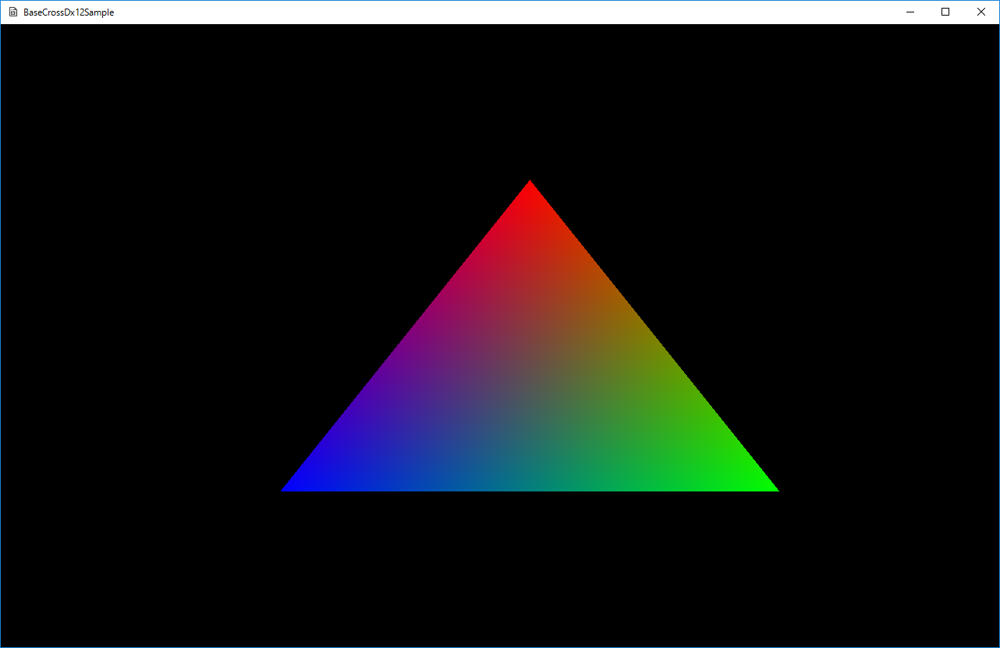

図0002a
#include "INCStructs.hlsli"
cbuffer ConstantBuffer : register(b0)
{
row_major float4x4 MatrixTransform : packoffset(c0);
float4 Emissive : packoffset(c4);
};
PSPCInput main(VSPCInput input)
{
PSPCInput result;
result.position = mul(input.position, MatrixTransform);
result.color = input.color;
return result;
}
#include "INCStructs.hlsli"
cbuffer ConstantBuffer : register(b0)
{
row_major float4x4 MatrixTransform : packoffset(c0);
float4 Emissive : packoffset(c4);
};
float4 main(PSPCInput input) : SV_TARGET
{
return saturate(Emissive + input.color);
}
void TriangleSprite::OnCreate() {
//頂点を作成するための配列
vector<VertexPositionColor> vertices = {
{ VertexPositionColor(Vector3(0.0f, 0.5f, 0.0f), Color4(1.0f,0.0f,0.0f,1.0f)) },
{ VertexPositionColor(Vector3(0.5f, -0.5f, 0.0f), Color4(0.0f, 1.0f, 0.0f, 1.0f)) },
{ VertexPositionColor(Vector3(-0.5f, -0.5f, 0.0f), Color4(0.0f, 0.0f, 1.0f, 1.0f)) },
};
m_TriangleMesh = MeshResource::CreateMeshResource(vertices, false);
///ルートシグネチャ作成
CreateRootSignature();
///デスクプリタヒープ作成
CreateDescriptorHeap();
///コンスタントバッファ作成
CreateConstantBuffer();
///パイプラインステート作成
CreatePipelineState();
///コマンドリスト作成
CreateCommandList();
//コンスタントバッファの更新
UpdateConstantBuffer();
}
///ルートシグネチャ作成
void TriangleSprite::CreateRootSignature() {
//コンスタントバッファ付ルートシグネチャ
m_RootSignature = RootSignature::CreateCbv();
}
//コンスタントバッファのみ
static inline ComPtr<ID3D12RootSignature> CreateCbv() {
auto Dev = App::GetApp()->GetDeviceResources();
ComPtr<ID3D12RootSignature> Ret = Dev->GetRootSignature(L"Cbv");
if (Ret != nullptr) {
return Ret;
}
CD3DX12_DESCRIPTOR_RANGE ranges[1];
ranges[0].Init(D3D12_DESCRIPTOR_RANGE_TYPE_CBV, 1, 0);
CD3DX12_ROOT_PARAMETER rootParameters[1];
rootParameters[0].InitAsDescriptorTable(1, &ranges[0], D3D12_SHADER_VISIBILITY_ALL);
D3D12_ROOT_SIGNATURE_FLAGS rootSignatureFlags =
D3D12_ROOT_SIGNATURE_FLAG_ALLOW_INPUT_ASSEMBLER_INPUT_LAYOUT;
CD3DX12_ROOT_SIGNATURE_DESC rootSignatureDesc;
rootSignatureDesc.Init(_countof(rootParameters), rootParameters, 0, nullptr,
rootSignatureFlags);
Ret = CreateDirect(rootSignatureDesc);
Dev->SetRootSignature(L"Cbv", Ret);
return Ret;
}
///デスクプリタヒープ作成
void TriangleSprite::CreateDescriptorHeap() {
auto Dev = App::GetApp()->GetDeviceResources();
m_CbvSrvDescriptorHandleIncrementSize
= Dev->GetDevice()->GetDescriptorHandleIncrementSize(D3D12_DESCRIPTOR_HEAP_TYPE_CBV_SRV_UAV);
//CbvSrvデスクプリタヒープ(コンスタントバッファのみ)
m_CbvSrvUavDescriptorHeap = DescriptorHeap::CreateCbvSrvUavHeap(1);
//GPU側デスクプリタヒープのハンドルの配列の作成
m_GPUDescriptorHandleVec.clear();
CD3DX12_GPU_DESCRIPTOR_HANDLE CbvHandle(
m_CbvSrvUavDescriptorHeap->GetGPUDescriptorHandleForHeapStart(),
0,
0
);
m_GPUDescriptorHandleVec.push_back(CbvHandle);
}
static inline ComPtr<ID3D12DescriptorHeap> CreateCbvSrvUavHeap(UINT NumDescriptorHeap) {
//CbvSrvデスクプリタヒープ
D3D12_DESCRIPTOR_HEAP_DESC CbvSrvHeapDesc = {};
CbvSrvHeapDesc.NumDescriptors = NumDescriptorHeap;
CbvSrvHeapDesc.Type = D3D12_DESCRIPTOR_HEAP_TYPE_CBV_SRV_UAV;
CbvSrvHeapDesc.Flags = D3D12_DESCRIPTOR_HEAP_FLAG_SHADER_VISIBLE;
return CreateDirect(CbvSrvHeapDesc);
}
class TriangleSprite : public ObjectInterface, public ShapeInterface {
//中略
///コンスタントバッファ
struct SpriteConstantBuffer
{
Matrix4X4 World;
Color4 Emissive;
SpriteConstantBuffer() {
memset(this, 0, sizeof(SpriteConstantBuffer));
};
};
///コンスタントバッファデータ
SpriteConstantBuffer m_SpriteConstantBuffer;
///コンスタントバッファアップロードヒープ
ComPtr<ID3D12Resource> m_ConstantBufferUploadHeap;
///コンスタントバッファのGPU側変数
void* m_pConstantBuffer{ nullptr };
//中略
};
///コンスタントバッファ作成
void TriangleSprite::CreateConstantBuffer() {
auto Dev = App::GetApp()->GetDeviceResources();
ThrowIfFailed(Dev->GetDevice()->CreateCommittedResource(
&CD3DX12_HEAP_PROPERTIES(D3D12_HEAP_TYPE_UPLOAD),
D3D12_HEAP_FLAG_NONE,
&CD3DX12_RESOURCE_DESC::Buffer((sizeof(SpriteConstantBuffer) + 255) & ~255),
D3D12_RESOURCE_STATE_GENERIC_READ,
nullptr,
IID_PPV_ARGS(&m_ConstantBufferUploadHeap)),
L"コンスタントバッファ用のアップロードヒープ作成に失敗しました",
L"Dev->GetDevice()->CreateCommittedResource()",
L"TriangleSprite::CreateConstantBuffer()"
);
//コンスタントバッファのビューを作成
D3D12_CONSTANT_BUFFER_VIEW_DESC cbvDesc = {};
cbvDesc.BufferLocation = m_ConstantBufferUploadHeap->GetGPUVirtualAddress();
//コンスタントバッファは256バイトにアラインメント
cbvDesc.SizeInBytes = (sizeof(SpriteConstantBuffer) + 255) & ~255;
//コンスタントバッファビューを作成すべきデスクプリタヒープ上のハンドルを取得
//シェーダリソースがある場合コンスタントバッファはシェーダリソースビューのあとに設置する
CD3DX12_CPU_DESCRIPTOR_HANDLE cbvSrvHandle(
m_CbvSrvUavDescriptorHeap->GetCPUDescriptorHandleForHeapStart(),
0,
0
);
Dev->GetDevice()->CreateConstantBufferView(&cbvDesc, cbvSrvHandle);
//コンスタントバッファのアップロードヒープのマップ
CD3DX12_RANGE readRange(0, 0);
ThrowIfFailed(m_ConstantBufferUploadHeap->Map(0,
&readRange, reinterpret_cast<void**>(&m_pConstantBuffer)),
L"コンスタントバッファのマップに失敗しました",
L"pImpl->m_ConstantBufferUploadHeap->Map()",
L"TriangleSprite::CreateConstantBuffer()"
);
}
１、コンスタントバッファのためにDx12によって確保される領域はアップロードヒープである。 ２、アップロードヒープとデスクプリタヒープのCPU側ハンドルを使って、コンスタントバッファビューを作成する。 ３、アップロードヒープにデータをアップするために、メンバ変数のポインタをマップさせる
void TriangleSprite::UpdateConstantBuffer() {
//コンスタントバッファの準備
m_SpriteConstantBuffer.Emissive = Color4(0.0f, 0.0f, 0, 1.0f);
Matrix4X4 mat;
mat.TranslationFromVector(m_Pos);
m_SpriteConstantBuffer.World = mat;
//更新
memcpy(m_pConstantBuffer, reinterpret_cast<void**>(&m_SpriteConstantBuffer),
sizeof(m_SpriteConstantBuffer));
}
void TriangleSprite::CreatePipelineState() {
D3D12_GRAPHICS_PIPELINE_STATE_DESC PineLineDesc;
m_PipelineState
= PipelineState::CreateDefault2D<VertexPositionColor,
VSPCSprite, PSPCSprite>(m_RootSignature, PineLineDesc);
}
DECLARE_DX12SHADER(VSPCSprite)
#define DECLARE_DX12SHADER(ShaderName) class ShaderName : \
public Dx12Shader<ShaderName>{ \
public: \
ShaderName(); \
};
IMPLEMENT_DX12SHADER(VSPCSprite, App::GetApp()->m_wstrRelativeShadersPath + L"VSPCSprite.cso")
#define IMPLEMENT_DX12SHADER(ShaderName,CsoFilename) unique_ptr<ShaderName, ShaderName::Deleter> ShaderName::m_Ptr; \
ShaderName::ShaderName() : \
Dx12Shader(CsoFilename){}
void TriangleSprite::CreateCommandList() {
m_CommandList = CommandList::CreateDefault(m_PipelineState);
CommandList::Close(m_CommandList);
}
void TriangleSprite::DrawObject() {
auto Dev = App::GetApp()->GetDeviceResources();
//コマンドリストのリセット
CommandList::Reset(m_PipelineState, m_CommandList);
//メッシュが更新されていればリソース更新
m_TriangleMesh->UpdateResources<VertexPositionColor>(m_CommandList);
//ルートシグネチャのセット
m_CommandList->SetGraphicsRootSignature(m_RootSignature.Get());
//デスクプリタヒープのセット
ID3D12DescriptorHeap* ppHeaps[] = { m_CbvSrvUavDescriptorHeap.Get() };
m_CommandList->SetDescriptorHeaps(_countof(ppHeaps), ppHeaps);
//GPUデスクプリタヒープハンドルのセット
for (size_t i = 0; i < m_GPUDescriptorHandleVec.size(); i++) {
m_CommandList->SetGraphicsRootDescriptorTable(i, m_GPUDescriptorHandleVec[i]);
}
m_CommandList->RSSetViewports(1, &Dev->GetViewport());
m_CommandList->RSSetScissorRects(1, &Dev->GetScissorRect());
//レンダーターゲットビューのハンドルを取得
CD3DX12_CPU_DESCRIPTOR_HANDLE rtvHandle = Dev->GetRtvHandle();
//デプスステンシルビューのハンドルを取得
CD3DX12_CPU_DESCRIPTOR_HANDLE dsvHandle = Dev->GetDsvHandle();
//取得したハンドルをセット
m_CommandList->OMSetRenderTargets(1, &rtvHandle, FALSE, &dsvHandle);
m_CommandList->IASetPrimitiveTopology(D3D_PRIMITIVE_TOPOLOGY_TRIANGLELIST);
m_CommandList->IASetVertexBuffers(0, 1, &m_TriangleMesh->GetVertexBufferView());
m_CommandList->DrawInstanced(m_TriangleMesh->GetNumVertices(), 1, 0, 0);
//コマンドリストのクローズ
CommandList::Close(m_CommandList);
//デバイスにコマンドリストを送る
Dev->InsertDrawCommandLists(m_CommandList.Get());
}
class TriangleSprite : public ObjectInterface, public ShapeInterface {
///メッシュ
shared_ptr<MeshResource> m_TriangleMesh;
Vector3 m_Pos; ///<現在の位置
Vector3 m_MoveSpan; ///<位置変更値
public:
//構築と破棄
TriangleSprite();
virtual ~TriangleSprite();
//初期化
virtual void OnCreate()override;
void OnUpdate()override;
void OnDraw()override;
};
void TriangleSprite::OnCreate() {
//頂点を作成するための配列
vector<VertexPositionColor> vertices = {
{ VertexPositionColor(Vector3(0.0f, 0.5f, 0.0f), Color4(1.0f,0.0f,0.0f,1.0f)) },
{ VertexPositionColor(Vector3(0.5f, -0.5f, 0.0f), Color4(0.0f, 1.0f, 0.0f, 1.0f)) },
{ VertexPositionColor(Vector3(-0.5f, -0.5f, 0.0f), Color4(0.0f, 0.0f, 1.0f, 1.0f)) },
};
m_TriangleMesh = MeshResource::CreateMeshResource(vertices, false);
}
void TriangleSprite::OnDraw() {
auto Dev = App::GetApp()->GetDeviceResources();
auto pD3D11DeviceContext = Dev->GetD3DDeviceContext();
auto RenderState = Dev->GetRenderState();
//コンスタントバッファの準備
SpriteConstantBuffer sb;
sb.Emissive = Color4(0.0f, 0.0f, 0, 1.0f);
Matrix4X4 mat;
mat.TranslationFromVector(m_Pos);
sb.World = mat;
//コンスタントバッファの更新
pD3D11DeviceContext->UpdateSubresource(CBSprite::GetPtr()->GetBuffer(), 0, nullptr,
&sb, 0, 0);
//ストライドとオフセット
UINT stride = sizeof(VertexPositionColor);
UINT offset = 0;
pD3D11DeviceContext->IASetVertexBuffers(0, 1, m_TriangleMesh->GetVertexBuffer().GetAddressOf(),
&stride, &offset);
//描画方法（3角形）
pD3D11DeviceContext->IASetPrimitiveTopology(D3D11_PRIMITIVE_TOPOLOGY_TRIANGLELIST);
//コンスタントバッファの設定
ID3D11Buffer* pConstantBuffer = CBSprite::GetPtr()->GetBuffer();
ID3D11Buffer* pNullConstantBuffer = nullptr;
//頂点シェーダに渡す
pD3D11DeviceContext->VSSetConstantBuffers(0, 1, &pConstantBuffer);
//ピクセルシェーダに渡す
pD3D11DeviceContext->PSSetConstantBuffers(0, 1, &pConstantBuffer);
//シェーダの設定
pD3D11DeviceContext->VSSetShader(VSPCSprite::GetPtr()->GetShader(), nullptr, 0);
pD3D11DeviceContext->PSSetShader(PSPCSprite::GetPtr()->GetShader(), nullptr, 0);
//インプットレイアウトの設定
pD3D11DeviceContext->IASetInputLayout(VSPCSprite::GetPtr()->GetInputLayout());
//ブレンドステート
pD3D11DeviceContext->OMSetBlendState(RenderState->GetOpaque(), nullptr, 0xffffffff);
//デプスステンシルステート
pD3D11DeviceContext->OMSetDepthStencilState(RenderState->GetDepthNone(), 0);
//ラスタライザステート
pD3D11DeviceContext->RSSetState(RenderState->GetCullBack());
//描画
pD3D11DeviceContext->Draw(m_TriangleMesh->GetNumVertices(), 0);
//後始末
Dev->InitializeStates();
}
//コンスタントバッファの準備
SpriteConstantBuffer sb;
sb.Emissive = Color4(0.0f, 0.0f, 0, 1.0f);
Matrix4X4 mat;
mat.TranslationFromVector(m_Pos);
sb.World = mat;
//コンスタントバッファの更新
pD3D11DeviceContext->UpdateSubresource(CBSprite::GetPtr()->GetBuffer(), 0, nullptr,
&sb, 0, 0);
//コンスタントバッファの設定
ID3D11Buffer* pConstantBuffer = CBSprite::GetPtr()->GetBuffer();
//コンスタントバッファの設定
ID3D11Buffer* pConstantBuffer = CBSprite::GetPtr()->GetBuffer();
//頂点シェーダに渡す
pD3D11DeviceContext->VSSetConstantBuffers(0, 1, &pConstantBuffer);
//ピクセルシェーダに渡す
pD3D11DeviceContext->PSSetConstantBuffers(0, 1, &pConstantBuffer);
//スプライト用コンスタントバッファ構造体
struct SpriteConstantBuffer
{
Matrix4X4 World;
Color4 Emissive;
SpriteConstantBuffer() {
memset(this, 0, sizeof(SpriteConstantBuffer));
};
};
DECLARE_DX11_CONSTANT_BUFFER(CBSprite, SpriteConstantBuffer)
IMPLEMENT_DX11_CONSTANT_BUFFER(CBSprite)
CBSprite::GetPtr()->GetBuffer()
DECLARE_DX11_VERTEX_SHADER(VSPCSprite, VertexPositionColor) DECLARE_DX11_PIXEL_SHADER(PSPCSprite)
IMPLEMENT_DX11_VERTEX_SHADER(VSPCSprite,
App::GetApp()->m_wstrRelativeShadersPath + L"VSPCSprite.cso")
IMPLEMENT_DX11_PIXEL_SHADER(PSPCSprite,
App::GetApp()->m_wstrRelativeShadersPath + L"PSPCSprite.cso")
//シェーダの設定
pD3D11DeviceContext->VSSetShader(VSPCSprite::GetPtr()->GetShader(), nullptr, 0);
pD3D11DeviceContext->PSSetShader(PSPCSprite::GetPtr()->GetShader(), nullptr, 0);